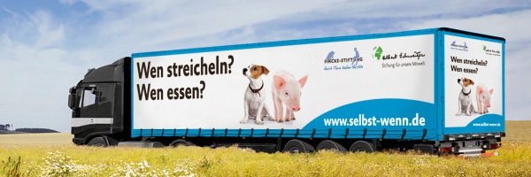
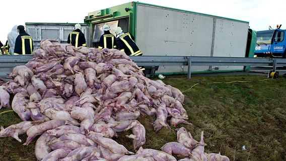

Ich bin Fleischesser, immer schon, und ich möchte es bleiben. Daran wird auch die Landtagssitzung nichts ändern, in der unser SPD-Landwirtschaftsminister und die Politiker seiner Regierungsfraktionen mir eindeutig gezeigt haben: SPD und CDU kann ich nicht mehr wählen. Wer z.B. beim Thema "artgerechter Haltung" von Tieren mit dem "Hunger in der Welt" argumentiert, der hat nichts kapiert. Und erzählt mir nicht, dass wir Schweinefleisch kostenlos nach Afrika schicken, am Besten noch in muslimische Länder!
Den Politikern der "Grünen" wünsche ich demnächst besseren Erfolg, wenn es um artgerechte Haltung, um biologischen Anbau, um biologische Aufzucht geht.
Wie hat TV-Koch Tim Melzer neulich in einer Sendung von NDR 1- Radio MV gesagt: " Den meisten Menschen in Deutschland geht es gut, wir sollten es uns immer öfter leisten, Fleisch von artgerecht gehaltenen und biologisch aufgewachsenen Tieren zu essen. Eventuell mal ein Schnitzel weniger! Jede Bewegung braucht eine Spitze, sonst gibt es keine Bewegung!"
Recht hat er! Einige zehntausend Schweine in einer Anlage, betreut von wenigen Arbeitskräften, den jungen Ebern werden die Hoden bei lebendigem Leib abgeschnitten, allen Ferkeln die Schwänze. Zu hunderten in einer Ladung werden sie in die Schlachthöfe gekarrt (ich habe Respekt vor jeden Transportfahrer, der langsamer fährt und auch die Kurven sehr vorsichtig nimmt!), zur Schlachtung getrieben und nicht alle landen - nach vielen Medienberichten - betäubt im kochenden Wasser.......ist eben Akkordarbeit. Warum steht bei Schlachthöfen ein großes Schild: Fotografieren und filmen verboten!
Rinder werden quer durch Europa gefahren, nur um EU-Fördermittel abzufassen, sind die Knochen geborsten, hebt ein Kran die leidende Kreatur aus dem Schiff. Sie kennen alle weitere Beispiele von Kücken, die im Schredder landen, von Legehennen ohne Federn usw.
Und da soll mir das Fleisch, das Ei noch schmecken? Und warum ist das Steak nur noch halb so groß, wenn es im heißen Fett liegt?
Ich esse weiter Fleisch und ich esse weniger Fleisch. Dafür freue ich mich auf einen Sonntagsbraten mehr als früher, denn er schmeckt besser. Vergangenen Sonntag gab es einen Sauerbraten mikt Klößen und Rotkohl. Das Rindfleisch habe ich vom Bio-Hof. Das Rind ist auf unseren Wiesen gemästet worden und dann hat es ein Schlachter hier in der Nähe geschlachtet, ohne, dass es leiden mußte. Das Fleisch war zart und köstlich.
Eier, dann und wann ein Huhn, kaufe ich einer Frau im Dorf ab. Auch unser Entenbraten wächst auf dem Dorf auf, wird fachgerecht geschlachtet. Ab und an bekomme ich von einem Taubenzüchter ein paar geschlachtete Täubchen verkauft. Unser Schäfer bietet zu Ostern halbe Lämmer an, auch biologisch groß geworden und fachgerecht geschlachtet. Lange haltbar in der Tiefkühltruhe
Ich bin fest davon überzeugt, dass weniger mehr ist. Es gibt viele leckere Gerichte und Speisen ohne Fleisch. Und zum Sonntag oder zum Feiertag den "Festagsbraten". Last uns den Landwirten eine Chance geben, die mit ihrem Vieh so umgehen, wie es uns unsere Moral und unsere Ethik vorgeben. Und noch eins: Auf der Autobahn der BMW, der Benz - in der Pfanne .... das passt doch nicht zusammen?
Fleisch und wie es aufwächst
Kategorie: Der Landwirt als Dienstleister - "Der Mensch im Mittelpunkt" · 4 Beiträge (statisches Archiv)
Re: Fleisch und wie es aufwächst
Das sehe ich auch so! Hilal Sezagin beleuchtete in einem Beitrag auf Deutschlandradio Kultur die Versuche der Befürworter von industrieller Tierhaltung, die Zustände in den Megaställen schön zureden:
"Bei der Messe "euroTier 2012" in Hannover werden neue Methoden für Zucht, Fütterung, Haltung und Gesundheit von Tieren vorgestellt. Das Tierwohl hat die Agrarindustrie aber nicht im Blick...
Manchmal weiß man gar nicht: Meinen die das jetzt noch ernst, oder ist das schon Realsatire? Die Welten liegen so weit auseinander ... Da verspricht der eine Wellness, der andere sieht: Albtraum! ...
Die heutige Landwirtschaft ist voller Euphemismen. Eigentlich sollte man bei dieser Tierhaltung auch gar nicht mehr von Landwirtschaft sprechen, sondern von Agrarindustrie. Es ist eine Industrie, die Leben zurechtstutzt, bis es in die Fabriken passt...Und alles, was wir an Verbesserungen diskutieren - das ist doch nur Kosmetik. Wir feilschen um Zentimeter, um Spaltenbreiten, um Luftvolumen und Ammoniakhöchstwerte ... Nein, unser heutiger Fleischkonsum ist einfach nicht zu rechtfertigen, denn wir nehmen den Tieren gleich zwei Mal das Leben. Einmal, indem wir sie schlachten, und dann: weil sie schon vor dem Tod nur dahinvegetieren. Das ist nicht Wellness. Das ist auch nicht "artgerecht". Das ist nicht mal Leben."
"Bei der Messe "euroTier 2012" in Hannover werden neue Methoden für Zucht, Fütterung, Haltung und Gesundheit von Tieren vorgestellt. Das Tierwohl hat die Agrarindustrie aber nicht im Blick...
Manchmal weiß man gar nicht: Meinen die das jetzt noch ernst, oder ist das schon Realsatire? Die Welten liegen so weit auseinander ... Da verspricht der eine Wellness, der andere sieht: Albtraum! ...
Die heutige Landwirtschaft ist voller Euphemismen. Eigentlich sollte man bei dieser Tierhaltung auch gar nicht mehr von Landwirtschaft sprechen, sondern von Agrarindustrie. Es ist eine Industrie, die Leben zurechtstutzt, bis es in die Fabriken passt...Und alles, was wir an Verbesserungen diskutieren - das ist doch nur Kosmetik. Wir feilschen um Zentimeter, um Spaltenbreiten, um Luftvolumen und Ammoniakhöchstwerte ... Nein, unser heutiger Fleischkonsum ist einfach nicht zu rechtfertigen, denn wir nehmen den Tieren gleich zwei Mal das Leben. Einmal, indem wir sie schlachten, und dann: weil sie schon vor dem Tod nur dahinvegetieren. Das ist nicht Wellness. Das ist auch nicht "artgerecht". Das ist nicht mal Leben."
Re: Fleisch und wie es aufwächst
Schwalbe hat geschrieben:
Das sehe ich auch so! Hilal Sezagin beleuchtete in einem Beitrag auf Deutschlandradio Kultur die Versuche der Befürworter von industrieller Tierhaltung, die Zustände in den Megaställen schön zureden:
Hier ist der vollständige Beitrag zum Nachlesen und Nachhören:
<!-- m --><a class="postlink" href="http://www.dradio.de/dkultur/sendungen/politischesfeuilleton/1919516/">http://www.dradio.de/dkultur/sendungen/ ... n/1919516/</a><!-- m -->
Re: Fleisch und wie es aufwächst
Bürger_P hat geschrieben:
Ich bin Fleischesser, immer schon, und ich möchte es bleiben. Daran wird auch die Landtagssitzung nichts ändern, in der unser SPD-Landwirtschaftsminister und die Politiker seiner Regierungsfraktionen mir eindeutig gezeigt haben: SPD und CDU kann ich nicht mehr wählen. Wer z.B. beim Thema "artgerechter Haltung" von Tieren mit dem "Hunger in der Welt" argumentiert, der hat nichts kapiert. Und erzählt mir nicht, dass wir Schweinefleisch kostenlos nach Afrika schicken, am Besten noch in muslimische Länder!
Wenn sogar Panzer nach Saudiarabien geschickt werden, wird auch mit Schweinefleisch Profit in muslimischen Ländern zu machen sein.
Unmittelbar nach dem Weihnachtsfest wurde in der Tagesschau eine Nachricht von Anfang des Monats aus Indonesien serviert:
"Skandal um indonesisches Traditionsgericht
Schweinefleisch in der Halal-Küche
Indonesiens Muslime sind erzürnt: In der traditionellen Bakso-Suppe wurde Schweinefleisch nachgewiesen.
Razzien in Fleischfabriken und Restaurants in Jakarta folgten.
Schuld an den unreinen Speisen sind gestiegene Preise für Rindfleisch infolge des australischen Exportstopps."
Das befördert doch die deutschen Schweineexportpotentiale.
Die "Albert Schweizer Stiftung für unsere Mitwelt" dagegen hinterfragt die verschiedenen Legitimationen der traditionellen Fleischeslust:
http://www.selbst-wenn.de/
[Anhang: <!-- ia1 -->lkw-fotofuerst_600.jpg<!-- ia1 -->]
Aber noch gilt: "Freie Fahrt für Schweinetransport". Die Kollateralschäden (Vollsperrung A20) zahlt der Steuerzahler.
[Anhang: <!-- ia0 -->schweinelaster135_v-contentgross.jpg<!-- ia0 -->]

